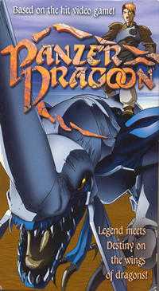
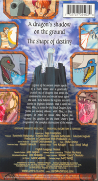

The Panzer Dragoon Anime OVA
 |
 |
After watching this
Panzer Dragoon Anime OVA I thought to myself, "It's fairly decent."
The greatest flaw I thought, was the fact that there just wasn't enough
music in certain places. So, I took music from Panzer Dragoon Saga,
and Panzer Dragoon Zwei and added it into the places I thought needed
music the most. I did this with Pinnacle Studio 8 and edited the music
in. Now I believe my edited version is much better than the original.
So download it and find out for yourselves! |
|
To save the file above, right click and "save target as" Requires Real Player |